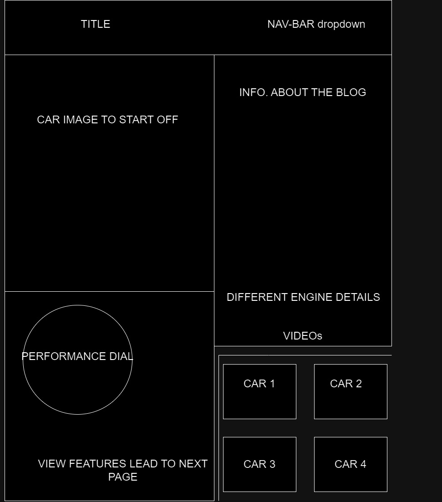
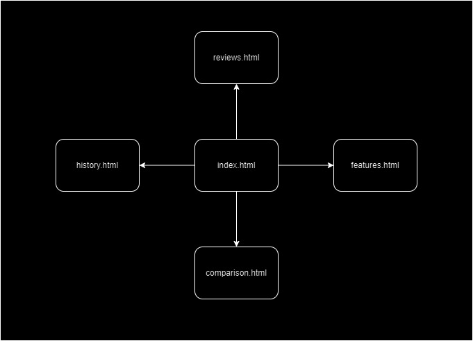

Describe your application and its purpose: The purpose of this application is to help my friend, who is a car enthusiast, create a blog site about cars and their components. The blog will showcase what makes each car unique from others, highlighting their competitive features and value.
Intended users of the website: The intended audience is people who love cars, enjoy learning about different models, technologies, and trends in the automotive industry, as well as individuals researching cars for purchase, interested in detailed information about features, performance, reliability, and value.
Overview of the content of the website: On this website, we plan to include a navigation bar that leads to several pages. These pages will feature: basic information about our goals, a showcase of various car components highlighting their uniqueness and advancing technology through photo gallery slideshows and descriptions, a page for users to interact and express their preferences on car models, a quiz page to test users' knowledge about cars, and maybe more!- whatever concludes down to cars topic.
Client Information
Name: Veena Karnati
Institute: NC State
Email: veena.karnati@gmail.com
Phone: 980-616-6532
Wireframe
My wireframe from the basic first page of the project.
Site-Map
My sitemap that consists of all the HTML sites I plan to include.
Page Design: index.html
The name of the page: Home
Purpose of the page: To provide an overview of your blog's content, showcase featured articles or categories, and encourage visitors to explore further by navigating to other pages.
Audience/Users of page (customer, admin, etc.): General visitors landing on your blog
What will be content of the page? Car images, maybe a carasouel, information about the page, performance dial knob, different engine photos, and buttons to explore various cars
Is this a page where you are asking users to enter data on the page? No
Will those data fields need any validations (if any)? No
Will the page contain buttons or hyperlinks or drop downs? Yes
What actions will happen in the page? (such as, when user clicks on a button - data processed, navigate to other page, search based on value, etc.?) when user clicks nav-bar items: navigation to another page, performance dial drop-down, click on various types cars to see their description and videos
Any special notes regarding the page (if any)?
Page Design: history.html
The name of the page: History
Purpose of the page: The quiz/history page combines interactive quizzes with interesting historical facts about cars and the automotive industry. Its purpose is to engage visitors in a fun and educational way, allowing them to test their knowledge of cars while learning about their evolution, iconic models, technological advancements, and cultural impact over time.
Audience/Users of page (customer, admin, etc.): Car enthusiasts, general readers interested in learning about car history and testing their knowledge
What will be content of the page? A form that is like a trivia for the users
Is this a page where you are asking users to enter data on the page? Yes
Will those data fields need any validations (if any)? No
Will the page contain buttons or hyperlinks or drop downs? Yes
What actions will happen in the page? (such as, when user clicks on a button - data processed, navigate to other page, search based on value, etc.?)Form: when user clicks, data processed for the quiz
Any special notes regarding the page (if any)?
Page Design: features.html
The name of the page: Features
Purpose of the page: dedicated to highlighting the key features of different car models or technologies. Its purpose is to provide detailed information about specific features that make cars unique or desirable, such as safety features, infotainment systems, performance enhancements, and environmental sustainability.
Audience/Users of page (customer, admin, etc.): Car enthusiasts, potential buyers interested in specific car features
What will be content of the page? I will show the features about each car and whichever button they click on navigates to the other page. I will have a slideshow gallery on it and some words for descriptions
Is this a page where you are asking users to enter data on the page? Yes
Will those data fields need any validations (if any)? No
Will the page contain buttons or hyperlinks or drop downs? There is a search bar where user inputs data, there are different car components user can click on to see features and details. Yes
What actions will happen in the page? (such as, when user clicks on a button - data processed, navigate to other page, search based on value, etc.?) slideshow gallery, buttons, hyperlinks
Any special notes regarding the page (if any)?
Page Design: comparison.html
The name of the page: Comparison
Purpose of the page: help users compare different car models side by side. Its purpose is to assist potential buyers in making informed decisions by highlighting the similarities and differences between various cars, including pricing, specifications, fuel efficiency, safety ratings, and available options.
Audience/Users of page (customer, admin, etc.): Potential car buyers, individuals comparing different car models
What will be content of the page? Cars parts and videos about each one I include
Is this a page where you are asking users to enter data on the page? Yes
Will those data fields need any validations (if any)? No
Will the page contain buttons or hyperlinks or drop downs? Yes
What actions will happen in the page? (such as, when user clicks on a button - data processed, navigate to other page, search based on value, etc.?) When user fills out requested information see their fit and comparison
Any special notes regarding the page (if any)?
Page Design: reviews.html
The name of the page: Reviews
Purpose of the page: providing in-depth reviews of individual car models. Its purpose is to offer unbiased assessments of cars based on factors such as performance, design, comfort, reliability, and value for money. Readers can use these reviews to learn more about specific cars before making a purchase decision.
Audience/Users of page (customer, admin, etc.): Potential car buyers, individuals comparing different car models
What will be content of the page? I will be displaying reviews of various components based on what the user dropsdown on
Is this a page where you are asking users to enter data on the page? No
Will those data fields need any validations (if any)? Yes
Will the page contain buttons or hyperlinks or drop downs? Yes
What actions will happen in the page? (such as, when user clicks on a button - data processed, navigate to other page, search based on value, etc.?) Click on the button and the review for that will pop up
Any special notes regarding the page (if any)?
Dynamic Functionality
Home:
Slideshow to show different car images
Performance dial knob kind of thing to show which car has what type of a performace
Nav-bar will be like a dropdown one
History:
Form to quiz the user on their knowledge
Features:
Slideshow to show different car parts
whichever car they pick on navigates them to a different page
Comparison:
Slideshow to show different car components
Link to videos
Reviews:
Drop-down to see what the user clicks on and depending will show them reviews